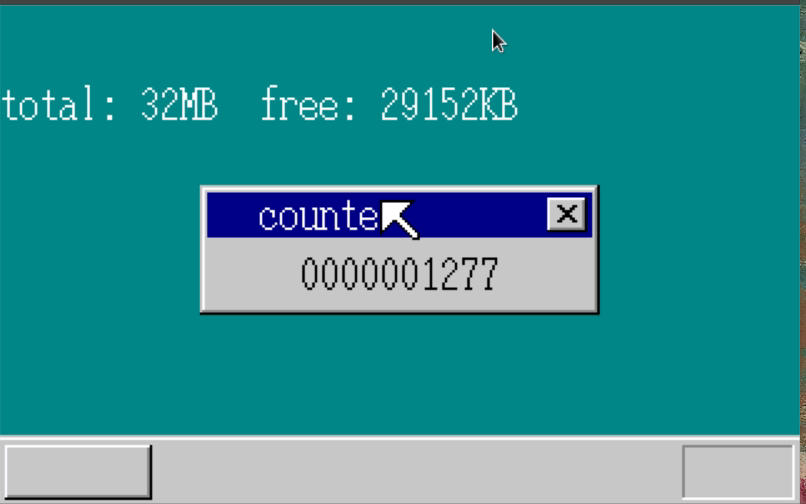
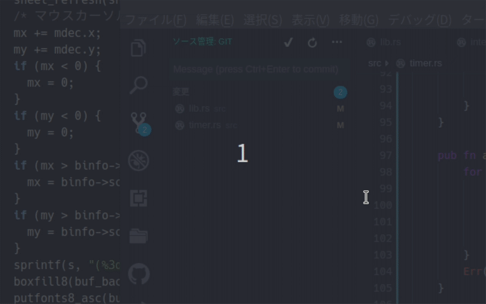

「30日でできる！OS自作入門」をRustで。12日目
Posted on June 28, 2019
「30日でできる！OS自作入門 」のC言語の部分をできるだけRustですすめてみる。今回は12日目の内容。
タイマの導入
今回はまずタイマを導入する。
PIT(Programmable Interval Timer)を設定し、タイマからの割り込みを受け付けられるようにする。
// timer.rs
use crate::asm::out8;
use crate::interrupt::PIC0_OCW2;
pub static mut COUNTER: u32 = 0;
const PIT_CTRL: u32 = 0x0043;
const PIT_CNT0: u32 = 0x0040;
pub fn init_pit() {
out8(PIT_CTRL, 0x34);
out8(PIT_CNT0, 0x9c);
out8(PIT_CNT0, 0x2e);
unsafe { COUNTER = 0; }
}
pub extern "C" fn inthandler20() {
out8(PIC0_OCW2, 0x60); // IRQ-00受付完了をPICに通知
unsafe { COUNTER += 1; } // カウントアップ
}10msごとにカウントアップするように設定した。COUNTERはとりあえずstatic mutにしている。
割り込み処理なので、IDTに登録する必要がある。
// descriptor_table.rs
pub fn init() {
use crate::interrupt::{inthandler21, inthandler2c};
use asm::{load_gdtr, load_idtr};
// GDTの初期化
for i in 0..=(LIMIT_GDT / 8) {
let gdt = unsafe { &mut *((ADR_GDT + i * 8) as *mut SegmentDescriptor) };
*gdt = SegmentDescriptor::new(0, 0, 0);
}
let gdt = unsafe { &mut *((ADR_GDT + 1 * 8) as *mut SegmentDescriptor) };
*gdt = SegmentDescriptor::new(0xffffffff, 0x00000000, AR_DATA32_RW);
let gdt = unsafe { &mut *((ADR_GDT + 2 * 8) as *mut SegmentDescriptor) };
*gdt = SegmentDescriptor::new(LIMIT_BOTPAK, ADR_BOTPAK, AR_CODE32_ER);
load_gdtr(LIMIT_GDT, ADR_GDT);
// IDTの初期化
for i in 0..=(LIMIT_IDT / 8) {
let idt = unsafe { &mut *((ADR_IDT + i * 8) as *mut GateDescriptor) };
*idt = GateDescriptor::new(0, 0, 0);
}
// 割り込みの設定
let idt = unsafe { &mut *((ADR_IDT + 0x21 * 8) as *mut GateDescriptor) };
*idt = GateDescriptor::new(handler!(inthandler21) as u32, 2 * 8, AR_INTGATE32);
let idt = unsafe { &mut *((ADR_IDT + 0x2c * 8) as *mut GateDescriptor) };
*idt = GateDescriptor::new(handler!(inthandler2c) as u32, 2 * 8, AR_INTGATE32);
let idt = unsafe { &mut *((ADR_IDT + 0x20 * 8) as *mut GateDescriptor) }; // <- 追加
*idt = GateDescriptor::new(handler!(inthandler20) as u32, 2 * 8, AR_INTGATE32); // <- 追加
load_idtr(LIMIT_IDT, ADR_IDT);
}interrupt.rsの初期化処理もPITを許可するように修正する
// interrupt.rs
pub fn allow_input() {
out8(PIC0_IMR, 0xf8); // <- PITも許可
out8(PIC1_IMR, 0xef);
init_keyboard();
}最後に lib.rsで初期化とカウンターの表示を行う。
// lib.rs
#[no_mangle]
#[start]
pub extern "C" fn haribote_os() {
// 省略
sti();
interrupt::allow_input();
timer::init_pit(); // <- 追加
init_palette();
enable_mouse();
// 省略
loop {
boxfill(buf_win_addr, 160, Color::LightGray, 40, 28, 119, 43);
let mut writer = ScreenWriter::new(Some(buf_win_addr), vga::Color::Black, 40, 28, 160, 52);
write!(writer, "{:>010}", unsafe { timer::COUNTER }).unwrap(); // <- static mutのCOUNTERを使うように
sheet_manager.refresh(shi_win, 40, 28, 120, 44);
// 省略結果
10msごとにカウントアップ、つまり1秒に100カウントアップするカウンターが表示されるようになった。

タイムアウトの実装
次にタイムアウトをハンドリングできるようにする。
複数のタイマを TimerManager にもたせる。
// timer.rs
use lazy_static::lazy_static;
use spin::Mutex;
use crate::asm::{cli, load_eflags, out8, store_eflags};
use crate::fifo::Fifo;
use crate::interrupt::PIC0_OCW2;
const PIT_CTRL: u32 = 0x0043;
const PIT_CNT0: u32 = 0x0040;
pub fn init_pit() {
out8(PIT_CTRL, 0x34);
out8(PIT_CNT0, 0x9c);
out8(PIT_CNT0, 0x2e);
}
pub extern "C" fn inthandler20() {
out8(PIC0_OCW2, 0x60); // IRQ-00受付完了をPICに通知
let mut tm = TIMER_MANAGER.lock();
tm.count += 1;
if tm.next > tm.count {
return;
}
let mut timeout_count = 0;
for i in 0..tm.counting {
timeout_count = i;
let timer_index = tm.timers[i as usize];
let t = tm.timers_data[timer_index];
if t.timeout > tm.count {
break;
}
{
let mut t_mut = &mut tm.timers_data[timer_index];
t_mut.flag = TimerFlag::USED;
}
let fifo = unsafe { &*(t.fifo_addr as *const Fifo) };
fifo.put(t.data).unwrap();
}
tm.counting -= timeout_count;
for i in 0..tm.counting {
tm.timers[i as usize] = tm.timers[(timeout_count + i) as usize];
}
if tm.counting > 0 {
tm.next = tm.timers_data[tm.timers[0]].timeout;
} else {
tm.next = 0xffffffff;
}
}
const MAX_TIMER: usize = 500;
#[derive(Debug, Clone, Copy)]
pub struct Timer {
pub timeout: u32,
pub flag: TimerFlag,
pub fifo_addr: u32,
pub data: u8,
}
impl Timer {
pub fn new() -> Timer {
Timer {
timeout: 0,
flag: TimerFlag::AVAILABLE,
fifo_addr: 0,
data: 0,
}
}
}
pub struct TimerManager {
pub count: u32,
pub next: u32,
pub counting: u32,
pub timers: [usize; MAX_TIMER],
pub timers_data: [Timer; MAX_TIMER],
}
#[derive(Debug, Clone, Copy, PartialEq, Eq)]
pub enum TimerFlag {
AVAILABLE,
USED,
COUNTING,
}
impl TimerManager {
pub fn new() -> TimerManager {
TimerManager {
count: 0,
next: 0,
counting: 0,
timers: [0; MAX_TIMER],
timers_data: [Timer::new(); MAX_TIMER],
}
}
pub fn alloc(&mut self) -> Result<usize, &'static str> {
for i in 0..MAX_TIMER {
if self.timers_data[i].flag == TimerFlag::AVAILABLE {
self.timers_data[i].flag = TimerFlag::USED;
return Ok(i);
}
}
Err("CANNOT ASSIGN TIMER")
}
pub fn set_time(&mut self, timer_index: usize, timeout: u32) {
let mut timer = &mut self.timers_data[timer_index];
timer.timeout = timeout + self.count;
timer.flag = TimerFlag::COUNTING;
let eflags = load_eflags();
cli();
let mut insert_index: usize = 0;
for i in 0..self.counting {
insert_index = i as usize;
let t = self.timers_data[self.timers[i as usize]];
if t.timeout >= t.timeout {
break;
}
}
let mut j = self.counting as usize;
while j > insert_index {
self.timers[j] = self.timers[j - 1];
j -= 1;
}
self.counting += 1;
self.timers[insert_index] = timer_index;
self.next = self.timers_data[self.timers[0]].timeout;
store_eflags(eflags);
}
pub fn init_timer(&mut self, timer_index: usize, fifo: &Fifo, data: u8) {
let mut timer = &mut self.timers_data[timer_index];
timer.fifo_addr = fifo as *const Fifo as u32;
timer.data = data;
}
pub fn free(&mut self, i: usize) {
let mut timer = &mut self.timers_data[i];
timer.flag = TimerFlag::AVAILABLE;
}
}
lazy_static! {
pub static ref TIMER_MANAGER: Mutex<TimerManager> = Mutex::new(TimerManager::new());
}TimerManager に順番を保持する用の配列と、実際のTimerのデータを保持する配列をもつのはSheetの場合と同様となる。
本にある通り、配列にある順番がtimeout順になっており、これにより1つずつタイムアウトしているかを見ていけばよい形になっている。
これを使って、画面に時間経過で表示されるようなものを作る。
// lib.rs
#[no_mangle]
#[start]
pub extern "C" fn haribote_os() {
// 省略
let timer_buf1 = Fifo::new(8);
let timer_buf2 = Fifo::new(8);
let timer_buf3 = Fifo::new(8);
descriptor_table::init();
// ...
enable_mouse();
let timer_index1 = TIMER_MANAGER.lock().alloc().unwrap();
TIMER_MANAGER
.lock()
.init_timer(timer_index1, &timer_buf1, 1);
TIMER_MANAGER.lock().set_time(timer_index1, 1000);
let timer_index2 = TIMER_MANAGER.lock().alloc().unwrap();
TIMER_MANAGER
.lock()
.init_timer(timer_index2, &timer_buf2, 1);
TIMER_MANAGER.lock().set_time(timer_index2, 300);
let timer_index3 = TIMER_MANAGER.lock().alloc().unwrap();
TIMER_MANAGER
.lock()
.init_timer(timer_index3, &timer_buf3, 1);
TIMER_MANAGER.lock().set_time(timer_index3, 50);
// 省略
loop {
cli();
if let Some(t) = TIMER_MANAGER.try_lock() {
boxfill(buf_win_addr, 160, Color::LightGray, 40, 28, 119, 43);
let mut writer =
ScreenWriter::new(Some(buf_win_addr), vga::Color::Black, 40, 28, 160, 52);
write!(writer, "{:>010}", t.count).unwrap();
sheet_manager.refresh(shi_win, 40, 28, 120, 44);
}
// 省略
} else if timer_buf1.status() != 0 {
let _ = timer_buf1.get().unwrap();
sti();
let mut writer = ScreenWriter::new(
Some(buf_bg_addr),
vga::Color::White,
0,
64,
*SCREEN_WIDTH as usize,
*SCREEN_HEIGHT as usize,
);
write!(writer, "10[sec]").unwrap();
sheet_manager.refresh(shi_bg, 0, 64, 56, 80);
} else if timer_buf2.status() != 0 {
let _ = timer_buf2.get().unwrap();
sti();
let mut writer = ScreenWriter::new(
Some(buf_bg_addr),
vga::Color::White,
0,
80,
*SCREEN_WIDTH as usize,
*SCREEN_HEIGHT as usize,
);
write!(writer, "3[sec]").unwrap();
sheet_manager.refresh(shi_bg, 0, 80, 56, 96);
} else if timer_buf3.status() != 0 {
let i = timer_buf3.get().unwrap();
sti();
if i != 0 {
TIMER_MANAGER
.lock()
.init_timer(timer_index3, &timer_buf3, 0);
boxfill(
buf_bg_addr,
*SCREEN_WIDTH as isize,
Color::White,
8,
96,
15,
111,
);
} else {
TIMER_MANAGER
.lock()
.init_timer(timer_index3, &timer_buf3, 1);
boxfill(
buf_bg_addr,
*SCREEN_WIDTH as isize,
Color::DarkCyan,
8,
96,
15,
111,
);
}
TIMER_MANAGER.lock().set_time(timer_index3, 50);
sheet_manager.refresh(shi_bg, 8, 96, 16, 112)
} else {
sti();
}10秒、3秒の経過で表示、および点滅する矩形を表示するようになっている。
実行結果
実行してみると以下の通り、秒数に応じて表示が切り替わっていることがわかる。gifだと画面がチラついて見えるが、実際はチラつきはなかった。

12日目は以上となる。ここまでの内容のコードはyoshitsugu/hariboteos_in_rustのday12としてタグを打ってある。